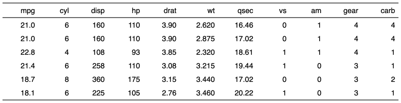
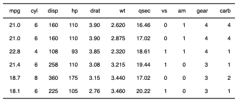

| fit_to_width {flextable} | R Documentation |
decrease font size for each cell incrementally until it fits a given max_width.
fit_to_width(x, max_width, inc = 1L, max_iter = 20, unit = "in")
x |
flextable object |
max_width |
maximum width to fit in inches |
inc |
the font size decrease for each step |
max_iter |
maximum iterations |
unit |
unit for max_width, one of "in", "cm", "mm". |


Other flextable dimensions:
autofit(),
dim.flextable(),
dim_pretty(),
flextable_dim(),
height(),
hrule(),
ncol_keys(),
nrow_part(),
set_table_properties(),
width()
ft_1 <- qflextable(head(mtcars)) ft_1 <- width(ft_1, width = 1) ft_1 ft_2 <- fit_to_width(ft_1, max_width = 4) ft_2